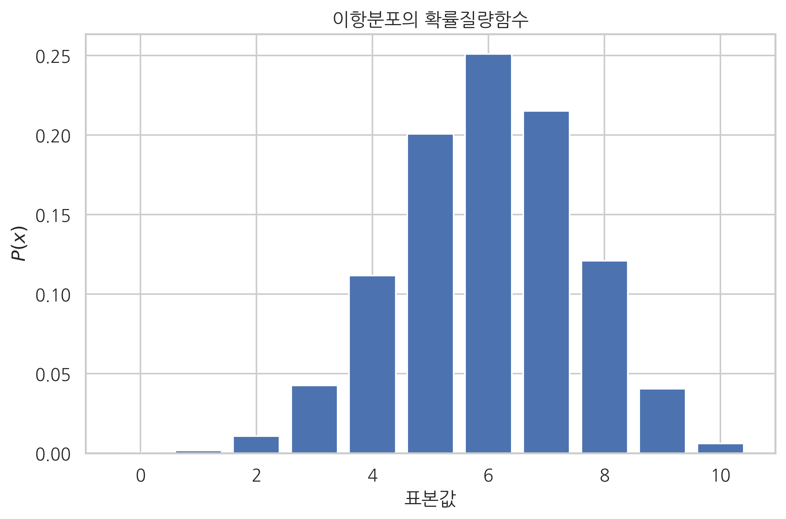

mu = 0.6
rv = sp.stats.bernoulli(mu)
type(rv)
scipy.stats._distn_infrastructure.rv_frozen
xx = [0, 1]
plt.bar(xx, rv.pmf(xx))
plt.xlim(-1, 2)
plt.ylim(0, 1)
plt.xticks([0, 1], ["x=0", "x=1"])
plt.xlabel("표본값")
plt.ylabel("P(x)")
plt.title("베르누이 확률변수의 확률질량함수")
plt.show()

x = rv.rvs(100, random_state=0)
x
array([1, 0, 0, 1, 1, 0, 1, 0, 0, 1, 0, 1, 1, 0, 1, 1, 1, 0, 0, 0, 0, 0,
1, 0, 1, 0, 1, 0, 1, 1, 1, 0, 1, 1, 1, 0, 0, 0, 0, 0, 1, 1, 0, 1,
0, 0, 1, 1, 1, 1, 1, 1, 0, 1, 1, 1, 0, 1, 1, 1, 1, 1, 0, 1, 1, 1,
0, 1, 0, 1, 0, 1, 0, 0, 0, 1, 1, 1, 1, 1, 1, 1, 1, 0, 1, 1, 1, 1,
1, 0, 1, 0, 1, 0, 1, 1, 1, 1, 0, 1])
sns.countplot(x)
plt.title("베르누이 확률변수의 시뮬레이션 결과")
plt.xlabel("표본값")
plt.show()

y = np.bincount(x, minlength=2) / float(len(x))
df = pd.DataFrame({"이론": rv.pmf(xx), "시뮬레이션": y})
df.index = [0, 1]
df
| 이론 | 시뮬레이션 | |
|---|---|---|
| 0 | 0.4 | 0.38 |
| 1 | 0.6 | 0.62 |
df2 = df.stack().reset_index()
df2.columns = ["표본값", "유형", "비율"]
df2
| 표본값 | 유형 | 비율 | |
|---|---|---|---|
| 0 | 0 | 이론 | 0.40 |
| 1 | 0 | 시뮬레이션 | 0.38 |
| 2 | 1 | 이론 | 0.60 |
| 3 | 1 | 시뮬레이션 | 0.62 |
sns.barplot(x="표본값", y="비율", hue="유형", data=df2)
plt.title("베르누이분포의 이론적 분포와 시뮬레이션 분포")
plt.show()

np.mean(x)
0.62
np.var(x, ddof=1)
0.23797979797979804
s = sp.stats.describe(x)
s[2], s[3]
(0.62, 0.23797979797979804)
N = 10
mu = 0.6
rv = sp.stats.binom(N, mu)
xx = np.arange(N + 1)
plt.bar(xx, rv.pmf(xx), align="center")
plt.xlabel("표본값")
plt.ylabel("$P(x)$")
plt.title("이항분포의 확률질량함수")
plt.show()

np.random.seed(0)
x = rv.rvs(100)
x
array([ 6, 5, 6, 6, 6, 5, 6, 4, 3, 6, 5, 6, 6, 4, 8, 8, 9,
5, 5, 4, 3, 5, 6, 5, 8, 5, 8, 4, 6, 6, 7, 5, 6, 6,
9, 6, 6, 6, 4, 5, 7, 6, 5, 8, 5, 5, 7, 8, 7, 7, 6,
6, 2, 8, 7, 8, 5, 7, 6, 7, 8, 8, 5, 8, 7, 7, 5, 8,
4, 8, 3, 6, 3, 6, 5, 9, 7, 8, 7, 8, 7, 6, 8, 5, 6,
7, 6, 8, 6, 4, 7, 5, 8, 5, 7, 7, 6, 9, 5, 10])
sns.countplot(x)
plt.title("이항분포의 시뮬레이션 결과")
plt.xlabel("표본값")
plt.show()

y = np.bincount(x, minlength=N+1)/float(len(x))
df = pd.DataFrame({"이론": rv.pmf(xx), "시뮬레이션": y}).stack()
df = df.reset_index()
df.columns = ["표본값", "유형", "비율"]
df.pivot("표본값", "유형", "비율")
df
| 표본값 | 유형 | 비율 | |
|---|---|---|---|
| 0 | 0 | 이론 | 0.000105 |
| 1 | 0 | 시뮬레이션 | 0.000000 |
| 2 | 1 | 이론 | 0.001573 |
| 3 | 1 | 시뮬레이션 | 0.000000 |
| 4 | 2 | 이론 | 0.010617 |
| 5 | 2 | 시뮬레이션 | 0.010000 |
| 6 | 3 | 이론 | 0.042467 |
| 7 | 3 | 시뮬레이션 | 0.040000 |
| 8 | 4 | 이론 | 0.111477 |
| 9 | 4 | 시뮬레이션 | 0.070000 |
| 10 | 5 | 이론 | 0.200658 |
| 11 | 5 | 시뮬레이션 | 0.210000 |
| 12 | 6 | 이론 | 0.250823 |
| 13 | 6 | 시뮬레이션 | 0.270000 |
| 14 | 7 | 이론 | 0.214991 |
| 15 | 7 | 시뮬레이션 | 0.170000 |
| 16 | 8 | 이론 | 0.120932 |
| 17 | 8 | 시뮬레이션 | 0.180000 |
| 18 | 9 | 이론 | 0.040311 |
| 19 | 9 | 시뮬레이션 | 0.040000 |
| 20 | 10 | 이론 | 0.006047 |
| 21 | 10 | 시뮬레이션 | 0.010000 |
sns.barplot(x="표본값", y="비율", hue="유형", data=df)
plt.title("이항분포의 이론적 분포와 시뮬레이션 분포")
plt.show()